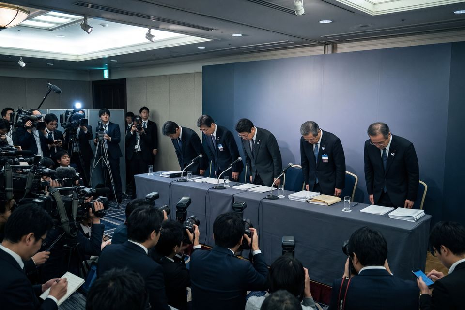

※イメージ画像（AI生成）
本記事はアフィリエイト広告（PR）を含みます。「PR」表示のあるリンクから商品を申し込むと、運営者に報酬が支払われることがあります。
2026年10月は、情報漏洩のニュースが特に多い月でした。個人情報保護委員会のまとめでは、不正アクセスによる漏洩の報告は、10月だけで16日までに830件。9月1か月分（303件）の2.7倍です。
ニュースが多すぎて「結局、自分に関係あるのはどれ？」となっている人も多いはずです。この記事では、10月に発表された主な漏洩10件について、何が漏れたのかと、該当する人が何をすべきかだけを整理しました。
各社の発表は調査の進み具合で更新されます。内容は記事作成時点の報道・発表にもとづくもので、最新の情報は各社の公式サイトで確認してください。
10月の主な漏洩10件
影響の大きさ（カード情報やパスワードが含まれるか）を目安に、上から並べています。
グッドスマイルカンパニー（公式ショップ）
2026年10月30日 第3報
- 規模
- 約2,800名
- 漏れた可能性がある情報
- カード名義人名、カード番号（全16桁）、有効期限、セキュリティコード
該当する人がやること：カード会社に連絡して再発行を相談し、利用明細を確認します。会社からは対象者にメールで個別連絡があります。
出典：GameBusiness.jp（10月30日）
So-net・plala（ソニーネットワークコミュニケーションズ）
2026年10月27日 発表
- 規模
- 258万5,481件（うち5万4,401アドレス分はメールのパスワードも）
- 漏れた可能性がある情報
- 氏名、電話番号、メールアドレス、ユーザーID、生年月日、性別、接続用ID。一部のメールサービスのメールアドレスとパスワード
- 含まれないとされる情報
- クレジットカード情報、メール以外の会員パスワード
該当する人がやること：対象のメールパスワードは初期化されているので、マイページから新しいパスワードを設定します。同じパスワードを他のサービスで使っていた人は、そちらもすぐに変えます。
出典：Impress Watch（10月27日）
パーク24（タイムズカー）
2026年10月23日 第5報（9月下旬に発覚）
- 規模
- 約662万件（うち運転免許証などの画像146万4,800件は外部送信の痕跡あり）
- 漏れた可能性がある情報
- 氏名、住所、生年月日、電話番号、メールアドレス、運転免許情報など。運転免許証などの本人確認書類の画像（暗号化して保管）
- 含まれないとされる情報
- クレジットカードの全桁番号とセキュリティコード（保有していないとしています）
該当する人がやること：同じパスワードを使っている他のサービスのパスワードを変えます。免許証の画像が対象になった人は、心当たりのない契約や請求がないか、しばらく注意して見ておきます。外部送信の痕跡がある人には3,000円相当が渡される予定です。
出典：ビジネス+IT
良品計画（MUJIアプリ）
2026年10月30日 発表
- 規模
- 最大約2,726万件（退会者を含む）
- 漏れた可能性がある情報
- メールアドレス、生年月日、性別
- 含まれないとされる情報
- クレジットカード情報、氏名、住所、電話番号（10月30日の発表時点）
該当する人がやること：無印良品を名乗る「なりすましメール」のURLは開かず、個人情報も入力しません。続報で対象の情報が変わる可能性があるので、公式サイトのお知らせも確認しておきます。
出典：ビジネス+IT
日本航空（JAL）・日本トランスオーシャン航空（JTA）
2026年10月28日発表（委託先アマデウス社の予約システム）
- 規模
- 約9万2,000人分（うち約2,000人分はパスポート番号など）
- 漏れた可能性がある情報
- 予約番号、氏名、搭乗日、区間、クラス。一部の人はメールアドレス、電話番号、パスポート番号、国籍、マイレージ番号など
- 含まれないとされる情報
- クレジットカード番号、各種パスワード
該当する人がやること：カードやパスワードは対象外とされています。本物の予約情報を使った「予約に問題があります」といった偽の連絡に注意し、リンクは開かずJAL公式アプリやサイトで確認します。
出典：トラベルボイス（10月28日）
日本交通
2026年10月30日 第6報（7月11日の不正アクセス）
- 規模
- 約29万人分の可能性
- 漏れた可能性がある情報
- 採用応募者、事故の相手方、乗務員・職員とその家族、ハイヤー利用客、取引先の情報。人によって氏名、住所、運転免許証、顔写真、銀行口座情報、一部の人のマイナンバーなど
- 含まれないとされる情報
- タクシー利用客の配車・乗車情報（クレジットカード情報は保有していないとしています）
該当する人がやること：対象者には書面かメールで順次通知されます。会社や官公庁を名乗る不審な連絡には応じず、口座情報が対象なら通帳やアプリで入出金を確認します。
出典：ビジネス+IT
ジョーシン（上新電機）
2026年10月26日 第2報（10月16日に異常を検知）
- 規模
- 最大約600万件（会員情報）ほか
- 漏れた可能性がある情報
- 会員の氏名、住所、電話番号、会員番号。サブスクサービス（最大約23万件）ではログインIDと初期パスワードなども
- 含まれないとされる情報
- クレジットカード情報（保有していないとしています）
該当する人がやること：サブスクを使っている人は、パスワードを初期のままにしていないか確認し、変更します。ジョーシンを名乗る不審なメール、SMS、電話に注意します。
出典：INTERNET Watch
GMOインターネットグループ（お名前.com デスクトップクラウド）
2026年10月27日 公表（FX自動売買専用VPS）
- 規模
- 人数は未公表
- 漏れた可能性がある情報
- 利用者のサーバーに保存されていたFXなどの取引口座のログイン情報など。攻撃者が情報の公開を予告し、公開が確認されています
該当する人がやること：このサービスを使っていた人は、FXなどの取引口座のパスワードを変え、二段階認証を設定し、取引履歴を確認します。公開された情報を見かけても、拡散しないよう呼びかけられています。
出典：Impress Watch（10月27日）
infoQ（GMOリサーチ&AI のアンケートサイト）
2026年10月14日 第2報（10月2日以降の不正アクセス）
- 規模
- 894,082件の持ち出しを確認
- 漏れた可能性がある情報
- 会員の個人情報。一部の会員のポイントが、本人の意思によらずAmazonギフトコードに交換されていました
該当する人がやること：会員の人は、infoQと同じパスワードを使っている他のサービスのパスワードを変えます。ポイント残高や交換履歴も確認します。
出典：ScanNetSecurity（10月19日）
日本経済新聞社
2026年10月16日 発表
- 規模
- 約183万件（うち168万件は単体では個人を特定できない内容）
- 漏れた可能性がある情報
- 氏名、電話番号、メールアドレス、住所
該当する人がやること：日経をかたったメールやSMS、電話に注意します。メール内のリンクは開かず、公式サイトから確認します。
出典：熊本日日新聞（共同通信）
どの事件でも、共通してやること
- 「お詫び」「確認」の連絡のリンクは開かない：漏洩のあとは、会社名をかたった偽のメールやSMSが出回りやすくなります。本物の予約情報や氏名が書かれていても、本物とは限りません。
- 使い回しているパスワードを変える：漏れたサービスだけでなく、同じパスワードを使っている他のサービスも変えます。
- 二段階認証をオンにする：パスワードが漏れても、それだけではログインされなくなります。
- カードや口座の明細を確認する：少額の不審な請求も見逃さないようにします。
自分が対象か分からないときは
多くの会社は、対象者に個別にメールや書面で連絡します。個人情報保護法では、漏洩のおそれがある場合、企業は本人への通知が原則として義務づけられています。
ただし通知には時間がかかることがあり、偽の「対象者のお知らせ」が届くこともあります。気になるときは、届いた連絡からではなく、その会社の公式サイトのお知らせページで確認してください。通知を待っている間にできることは、「企業の発表を待たずに、今日できる7つの防衛策」にまとめています。
個人向け！再発を防ぐおすすめサービスTOP5 PR
当サイトはアフィリエイト広告（PR）を掲載しています。「PR」表示のあるリンクから商品を申し込むと、運営者に報酬が支払われることがあります。
1
ESET HOME セキュリティ
総合セキュリティソフト
- 国内ではキヤノンITソリューションズが販売・サポートしているので、困ったときに日本語で相談できます。
- 上位プランにはパスワード管理機能も付いていて、ウイルス対策と使い回し対策を1本でまとめられます。
公式サイトを見る
2
ノートン 360
総合セキュリティソフト
- 世界的に知名度の高いセキュリティソフトです。ウイルス対策に加えて、パスワード管理やVPNもまとめて使えます。
- メールアドレスなどの流出を監視する機能があるプランもあり、「漏れていないか」を確かめ続けたい人に向いています。
公式サイトを見る
3
Surfshark Antivirus
ウイルス対策ソフト
- マルウェアなどの脅威から、パソコンやスマホを守るウイルス対策ソフトです。
- 同じ会社のVPNと組み合わせて使えるので、ウイルス対策と通信の保護を1社でそろえたい人に向いています。
公式サイトを見る
4
NordVPN
VPN
- カフェや駅のフリーWi-Fiでも通信を暗号化して、IDやパスワードの盗み見を防ぎます。
- 世界中で使われている大手VPNで、危険なサイトや広告をブロックする機能もあります。
公式サイトを見る
5
MillenVPN
VPN（国産）
- 日本の会社が運営する国産VPNで、申し込みからサポートまで日本語で完結します。
- 海外サービスに不安がある人でも始めやすく、フリーWi-Fiを使う機会が多い人の最初の1本に向いています。
公式サイトを見る
ランキングは、運営者が各社の公式情報をもとに「漏洩対策としての効果」「日本語での使いやすさ」「始めやすさ」の観点で選んだものです。料金や機能は変わることがあるため、申し込み前に公式サイトでご確認ください。